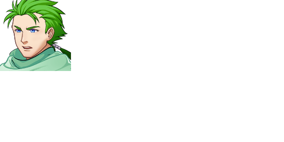

| Martzel | |
 | |
| Attributes | |
| Name Meaning: | hammer of justice |
| Unique Ability: | Being an Avatar. |
| Class Title: | Bilatzailea |
| Location: | Choosing Terminal; Various |
| Role: | Avatar |
| First Appearance: | Chapter Zero |
| Typing Style: | USUALLY SPEAKS IN ALL CAPS, AS IF SHOUTING! |
| Music Theme(s): | "Mirror Match" (shared with the other Avatars) |
| Details | |
| Species: | Game Character (Humanoid) |
| Gender: | Male |
| Eye Color: | Blue |
| Hair Color: | Green |
| Status: | Alive |
Martzel is loud, speaking in all caps, and always refers to himself as the HAMMER OF JUSTICE. He will drop this when embarrassed or frightened however.
Martzel is one of four Avatars who can act as your player character throughout the chapters.
Players who choose Nikole or Aintzane will fight Martzel, along with Amets, in Chapter Five.
Martzel's signature skill is Shock and Awe.
| This page is in the folowing categories: Male Characters, Game Characters, Humanoid |